🌿 Early Detection of Branched Broomrape in Tomato Crops by Leaf Spectral Analysis and Machine Learning
IFAC-PapersOnLine 59(23), 114–119 (2025)
Digital Agriculture Laboratory | University of California, Davis
Presented at AGRICONTROL 2025
This work was presented at the 8th IFAC Conference on Sensing, Control and Automation Technologies for Agriculture (AGRICONTROL 2025), Davis, California, U.S.A., August 27–29, 2025.

The Problem
Branched broomrape (Phelipanche ramosa) spends most of its life cycle underground, attaching to tomato roots and causing yield losses of up to 90% before aboveground symptoms appear. Standard detection (e.g. RGB drones) often misses early infestation. We used leaf-level spectral reflectance (400–2500 nm) and ensemble machine learning to detect broomrape before canopy symptoms—enabling earlier, targeted intervention. Figure 1 shows the U.S. tomato production trend and the need for improved crop management.
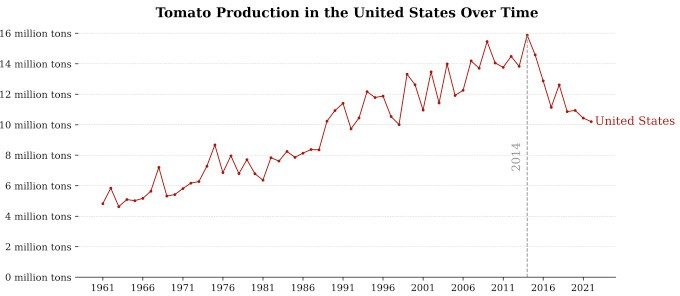
Figure 1: Historical trend of U.S. tomato production (FAO).
Study Area and Data Collection
We conducted the study on a tomato farm in Woodland, California, known for branched broomrape infestation. We used Growing Degree Days (GDD) to track growth stages: GDD = Σ(T̄ᵢ − T_b), with T_b = 10°C for tomatoes. On May 21, 2023, we transplanted seedlings and randomly flagged 300 plants. At four key stages—585 GDD (vegetative), 897 GDD (flowering), 1216 GDD (fruit development), and 1568 GDD (ripening)—we collected two fully expanded leaves from the middle canopy of each plant (600 samples per stage, 2400 overall). Leaves were kept in ice-cooled bags and transported to the lab. We used an HR-1024i full-range field-portable spectroradiometer (350–2500 nm) with an LC-RP PRO Leaf Clip and tungsten halogen illumination. By harvest, 49 plants were confirmed infected; we balanced the dataset by selecting 49 non-infected plants whose mean reflectance fell within one standard deviation of the overall non-infected mean (98 leaves per class per stage). Figure 2 shows the study location and farm.
Figure 2a: California tomato counties and target farm (ArcGIS Pro).
Figure 2b: Target tomato farm; non-infected and broomrape-infected plants.
Spectral Preprocessing and Correlation
We removed noisy bands at detector boundaries, interpolated to 1 nm resolution, applied a Savitzky–Golay filter (quadratic, frame length 7), and used standard scaling. Correlation thresholding (Pearson, >99%) reduced redundancy by averaging highly correlated adjacent bands. Figure 3 in the full paper shows correlation heatmaps at the four GDD stages and the resulting dimensionality reduction (e.g. 2100 → 106 bands).
Spectral Differences: Relative Mean Difference
We computed the Relative Mean Difference (RMD) between non-infected and infected leaves across the full wavelength range. Significant differences appeared near 1500 nm and 2000 nm (water absorption) at early stages—infected leaves showed reduced water content, consistent with the parasite drawing water from the host. At later stages the trend reversed: non-infected plants allocated more to fruit and had lower leaf water; infected plants retained more leaf moisture. Figure 4 shows RMD at each GDD stage.
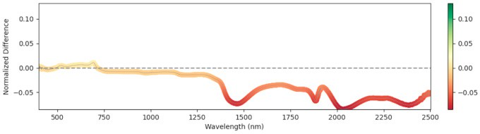
585 GDD
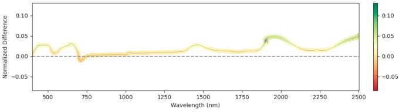
897 GDD
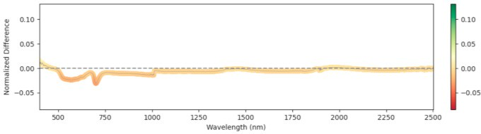
1216 GDD
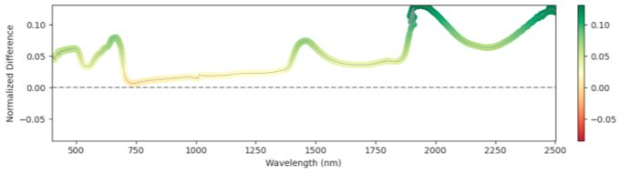
1568 GDD
Figure 4: Relative mean difference in reflectance between non-infected and broomrape-infected tomato leaves.
Ensemble Model and Feature Importance
We used an ensemble of Random Forest, XGBoost, SVM (RBF kernel), and Naive Bayes with a logistic-regression meta-classifier (65% train, 15% validation, 20% test). These were chosen for high AUC and low prediction correlation. Feature importance (Figure 5) highlights the role of water absorption regions across all GDD stages.
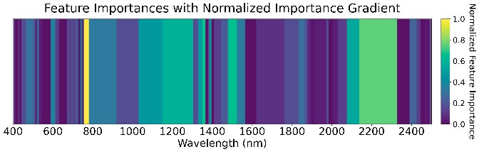
585 GDD
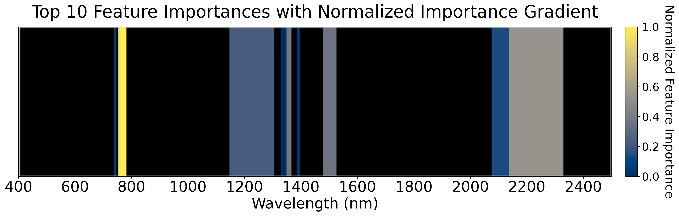
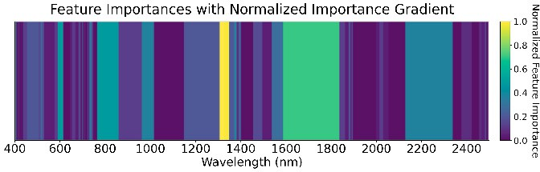
897 GDD
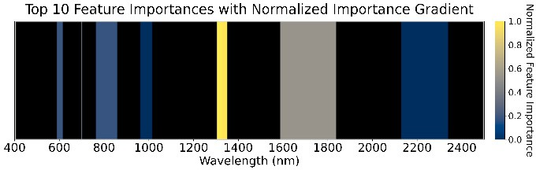
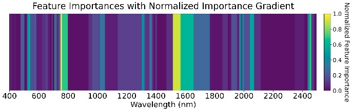
1216 GDD
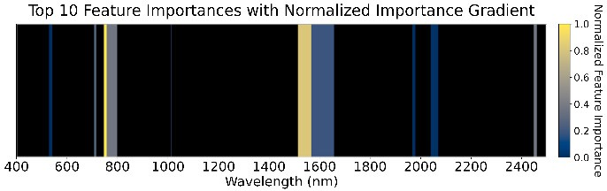
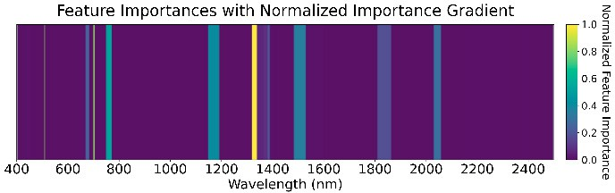
1568 GDD
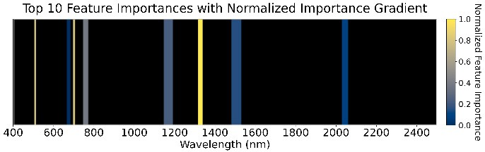
Figure 5: Feature importance of the ensemble models across four GDD stages.
Results: Accuracy and Confusion Matrices
At 585 GDD the ensemble reached 89% overall accuracy, with 86% recall for the infected class and 93% for non-infected—strong early-stage detection. Performance declined at later stages (e.g. 69% accuracy and 50% recall for infected at 1568 GDD), likely due to weed interference and senescence. Figure 6 shows the confusion matrices at all four stages.
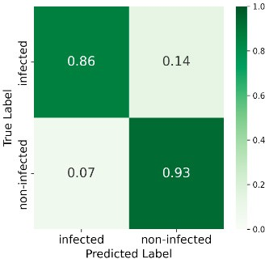
585 GDD
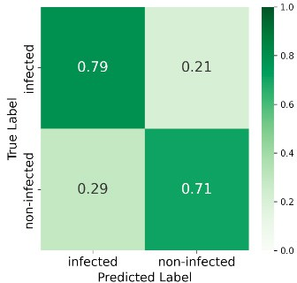
897 GDD
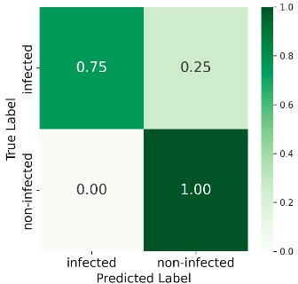
1216 GDD
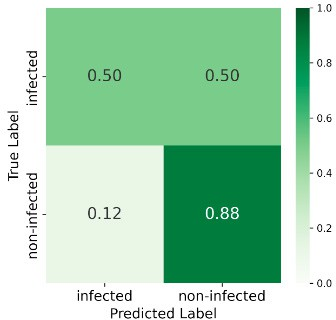
1568 GDD
Figure 6: Confusion matrices at four GDD stages.
Publication and Citation
Narimani, M., Pourreza, A., Moghimi, A., Farajpoor, P., Jafarbiglu, H., & Mesgaran, M. B. (2025). Early detection of branched broomrape (Phelipanche ramosa) infestation in tomato crops by using leaf spectral analysis and machine learning. IFAC-PapersOnLine, 59(23), 114–119.
Presented at: 8th IFAC Conference on Sensing, Control and Automation Technologies for Agriculture (AGRICONTROL 2025), Davis, California, U.S.A., August 27–29, 2025.
Contact
Mohammadreza Narimani
PhD Candidate, UC Davis